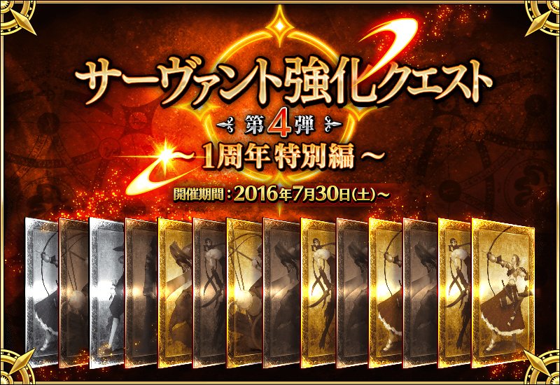

◆活動舉辦◆
2016年7月29日(五)23:00～
◆活動概要◆
能強化Servant能力的特別關卡，「Servant強化關卡」！
這次做為第4彈，由於1週年特別篇，一口氣合計14位為對象。
1天各2位，連續7天合計14個關卡在迦勒底之門開放。
做為關卡通過報酬，不僅進行對象Servant的強化，也能獲得聖晶石。
◆参加條件◆
所持有的強化對象Servant，必須使其最終再臨。
※未持有對象Servant的話，不會出現關卡。
※關卡沒有舉辦期限。

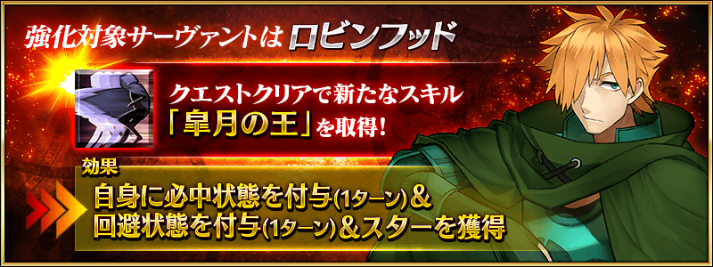
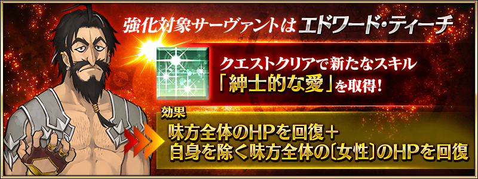

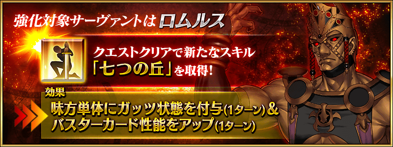
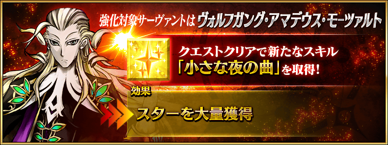

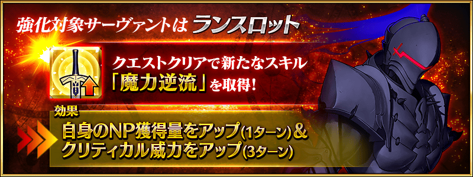
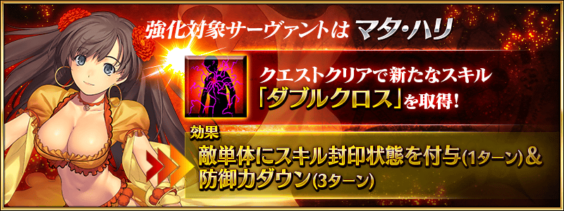

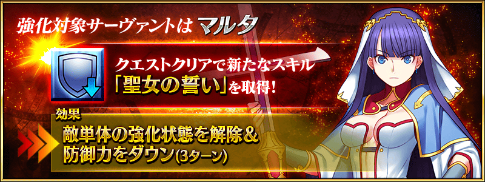
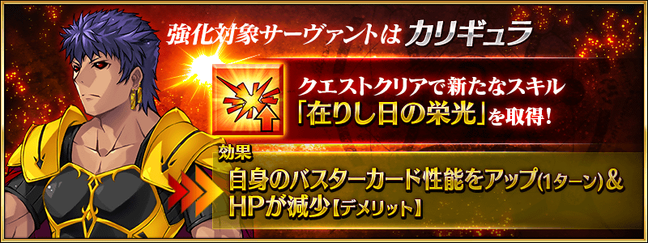

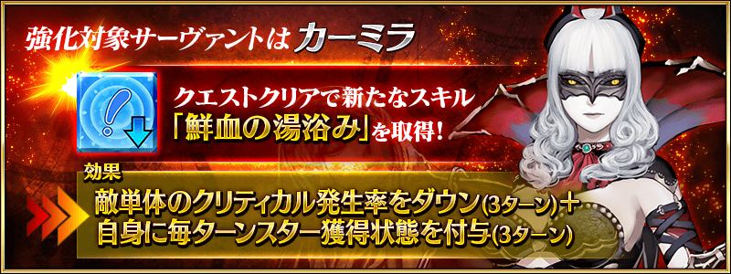
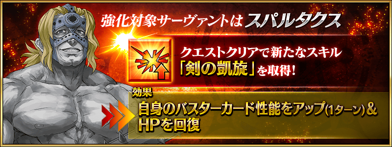

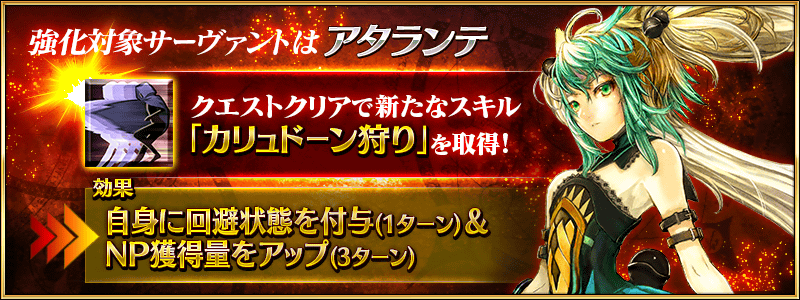
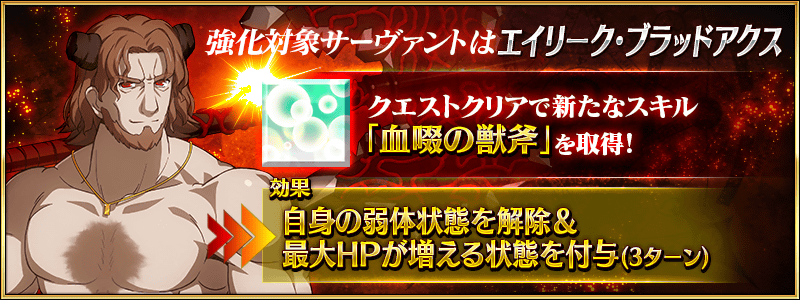

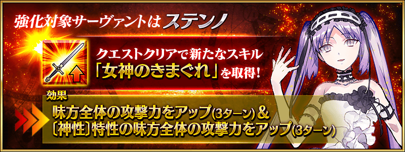
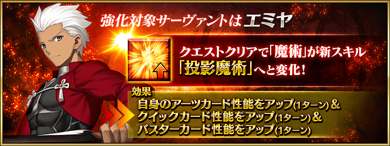